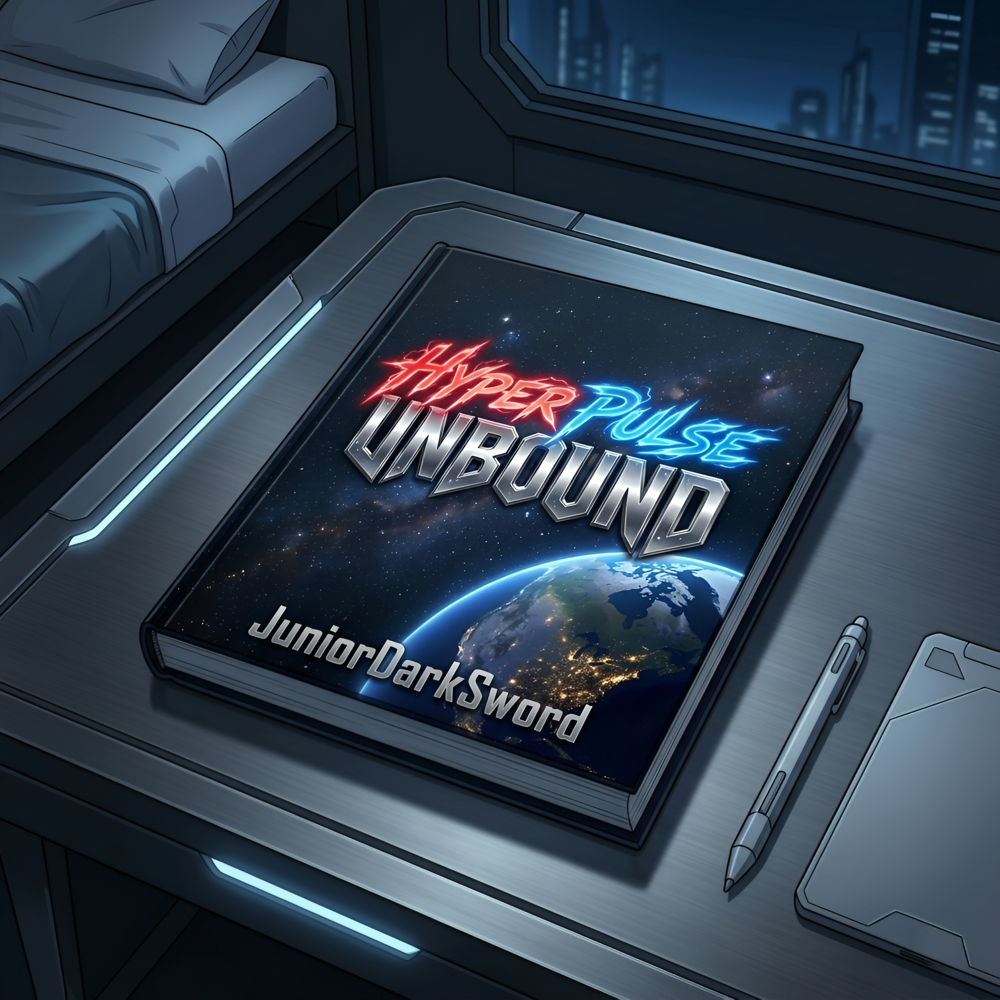

Inspirada por animes, animações ocidentais e videogames de ação, HyperPulse Unbound combina aventura, ficção científica e combates intensos em uma narrativa de longa duração. Com um número indeterminado de capítulos, a obra desenvolve uma história contínua em que cada capítulo contribui para a evolução do enredo. Ambientada em uma linha do tempo que se inicia em 2026 e avança gradualmente conforme os acontecimentos se desenrolam, a narrativa acompanha a progressão natural desse universo ao longo dos anos. E relaxa: por mais estranho ou aparentemente nonsense que algum capítulo pareça, nenhum é filler.
Aviso: Todos os capítulos da história e as biografias dos personagens foram escritos e formatados no celular. Por isso, ao abrir os PDFs no computador ou notebook, o texto pode parecer grande demais em telas maiores. Nesse caso, basta ajustar o zoom para uma leitura mais confortável.